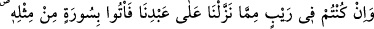
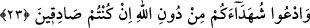

mânâya işâret etmektedir.
1. Şu gördüğünüz gökler, yer ve içinde bulunanlar sizin için bitmez tükenmez nimetler,
Allah’dan başka hiçbir kimsenin işi değildir. Bunu bilip durduğunuz halde, başkalarına
kulluk ederek Allah’a ortak tutmayın.
2. Muhakkak ki gökler, yer, güneş, ay ve sayısız yıldızlar, sizin maddî mânevî
rızıklarınıza sebeb olarak belli bir nizâm içinde benim tarafımdan yaratılmışlardır.
Hakîkî rızık verici ise benim. Siz güneş, ay ve yıldızları tanrılar edinerek onlara tapmak
sûretiyle yoldan çıkmayın.
3. Allah Teâlâ bütün mahlûkatı yaratmış ve herbirine bir diğerinde nasîb takdîr
etmiştir. İnsanın nasîbi ve hazzı muhabbetullah ve mârifetullahtadır. Bundan kesilip ayrı
düşen her nasîb sâhibi helâk olur. O halde siz de Allah sevgisi ve bilgisi şeklindeki
nasîbinize nâil olmaya ve bunu elde ettikten sonra kaçırmamaya gayret ediniz.
Sevilmeyecek şeyleri sevmekle muhabbet husûsunda Allah’a ortak koşmayınız. Öyle
yaparsanız şirk vâdîlerinde helâk olursunuz. Âyet-i celîlede:
“İnsanlardan öyleleri vardır ki, Allah’dan gayri dostlar edinirler ve onları
Allah’ın sevileceği şekilde severler.” (el-Bakara, 2/165) buyurulmaktadır. Bu kimseler
hakikaten îmân ve muhabbet ehli kimseler değillerdir. “Mü’minlerin en çok muhabbet
ettikleri ancak Allah’tır.” (el-Bakara, 2/165)
“ __WORD__ ”; Allah’dan başka dostlardır. Cenâb-ı Allah, îmân ile sevgiden mahrûm
kalmayanları şöyle nitelemiştir: “Mü’minler ise en çok Allah’ı severler.” (el-Bakara,
2/165) Yâni, sevgi konusunda Allah’dan başka birtakım ilâhlar edinenler, îmân
ettiklerini zannetseler de gerçekte mü’min değildirler. Binâenaleyh, bu konuyu iyi anla
ve öteden beri gelen, taklîdî îmâna kanma! Çünkü yerini bulabilen îmân, tahkîkî îmândır.
23. Eğer kulumuza indirdiklerimizden herhangi bir şüpheye düşüyorsanız, haydi
onun benzeri bir sûre getirin, eğer iddiânızda doğru iseniz Allah’dan gayri
şâhidlerinizi (yardımcılarınızı) da çağırın.
“Tenzîl”; bir şeyi tedrîcen parça parça indirmek demektir. Allah Teâlâ Kur’ân’ı,
Beyt-i izzetten dünyâ semâsına bir defada, oradan da Hz. Peygamber (a.s.)’a
ezberleyebilmesi için peyderpey yirmi üç senede indirmiştir. Çünkü Rasûlullah (s.a.)
ümmî idi. Okuma yazma bilmezdi. Fakat diğer peygamberler okuma bildiklerinden
kendilerine inen kitapları ezberleme imkânına sâhibtiler. Bu sebeble Kur’ân-ı
Kerîm’den önceki ilâhî kitapların toplu olarak bir defada indiği söylenmiştir.
“Sûre”; Kur’ân-ı Kerîm’in, evveli ve sonu belli, en az üç âyetten oluşan kısımlarına
verilen isimdir. Âyetten daha güçlü olduğu için bu isim verilmiştir. Çünkü sûre kuvvet
mânâsındadır. Bu îzâh sûre kelimesindeki “vav” harfinin aslî olmasına göredir. Ama bu